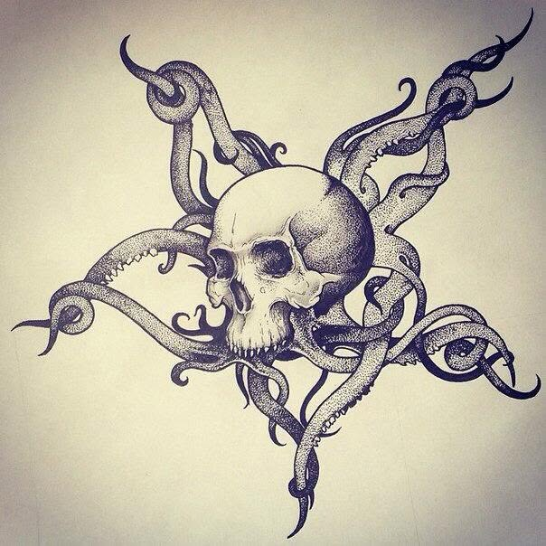

Alex Vaschuk / Selected drawings
The familiar.
The otherworldly.
Fine lines. Strange forms.
A glimpse into Alex’s imagination.

Selected works
Nine drawings from Alex’s Facebook archive: eight shared in June 2014, alongside his horned portrait shared in July 2017. Titles here describe the images; they are not original artwork titles. Each work links to its original post. View the original drawings album ↗
Behind the work
Alex Vaschuk / Al Vashchuk
Skulls, birds, faces, and impossible creatures. Alex’s drawings move between close observation and surreal invention, from the delicate color of an elephant to the intricate dots and curves of a tentacled skull.
This is a small archive of his creative world, collected by his brother. Alex shares his work under the name Al Vashchuk on Facebook.
Find Alex on Facebook ↗